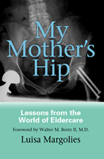

<body bgcolor="#FFFFFF" text="#000000" link="#0000FF" vlink="#CC0000" alink="#CC0000"><center><hr width="350" size="1" align="center" noshade>What most of us don't know about the longevity revolution<hr width="350" size="1" align="center" noshade><p><a href="https://cdcshoppingcart.uchicago.edu/Cart/ChicagoBook.aspx?ISBN=9781592132379&&PRESS=temple" target="_top">Buy this book!</a> | <a href="https://cdcshoppingcart.uchicago.edu/Cart/Cart.aspx?PRESS=temple" target="_top">View Cart</a> | <a href="https://cdcshoppingcart.uchicago.edu/Cart/Cart.aspx?PRESS=temple" target="_top">Check Out</a></p><p></p></center><!--none//--><h1>My Mother's Hip</h1>
<H2>Lessons from the World of Eldercare</H2>
<H2><!-- Foreword by Walter M. Bortz II, M.D. --></H2>
<h3>Luisa Margolies, foreword by Walter M. Bortz II, M.D.</h3>
<P>cloth 1-59213-237-5 $66.50, Feb 04, <FONT COLOR=#990033>Out of Stock Unavailable</FONT>
<br>paper 1-59213-238-3 $31.95, Feb 04, <FONT COLOR=#990033>Available</FONT>
<BR> 360 pp
6x9
</P><BLOCKQUOTE><I>"In </i>My Mother's Hip<i>, Luisa Margolies has written two powerful books in one. The chapters of her caregiving experience read like a novel, one that more and more Americans are living every day. Her alternating chapters, called 'Lessons,' build a compelling argument for fixing&#151;and humanizing&#151;the fragmented system of long-term care in the United States. Every older American, family caregiver, and provider of health and social services should read this remarkable book."</i>
<br>&#151<b>Gloria Cavanaugh</b>, President and CEO, American Society on Aging<i></I></BLOCKQUOTE>
<p>Some 400,000 hip fractures occur every year, the vast majority among the elderly; all too often these fractures are associated with death or severe disability. After her mother's double hip fracture, Luisa Margolies immersed herself in identifying and coordinating the services and professionals needed to provide critical care for an elderly person. She soon realized that the American medical system is ill prepared to deal with the long-term care needs of our graying society.
<p>The heart of <i>My Mother's Hip</i> is taken up with the author's day-to-day observations as her mother's condition worsened, then improved only to worsen again, while her father became increasingly anxious and disoriented. As both a devoted daughter and a skilled anthropologist, Margolies vividly renders her interactions with physicians, nurses, hospital workers, nursing home administrators, the Medicare bureaucracy, home care providers, and her parents. In the Lessons chapter that follows each episode, she discusses in a broader context the weighty decisions that adult children must make on their parents' behalf and the emotional toll their responsibility takes. Here she addresses the complex practical issues that commonly arise in such situations: understanding the consequences of hip fracture and its treatment, preparing health care proxies and advanced directives, enabling elders to remain at home, and the heartbreaking dilemma of prolonging life.
<p>Like many adult children, Margolies learned her lessons about eldercare in the midst of crises. This book is intended to ease the information-gathering and decision-making processes for others involved in eldercare.
<BR>&nbsp;<h2>Excerpt</h2><P>Excerpt available at <a href="http://www.temple.edu/tempress">www.temple.edu/tempress</a></p>
<BR>&nbsp;<h2>Reviews</h2>
<p><i>"In </i>My Mother's Hip<i>, Luisa Margolies seamlessly integrates medical information with an intensely personal story that includes the frustration and fear that result from caring&#151;and not always knowing how to care&#151;for people you love. She explores end-of-life issues with the certainty of one who's been there. She knows how elusive the right answers can be and in their absence, how necessary are the qualities of patience, love, and understanding."</i>
<br>&#151<b>Nick Taylor</b>, author of <i>A Necessary End</i>
<p><i>"</i>My Mother's Hip<i> should be mandatory reading for all those who treat hip fracture patients as well as for the families of the patients. Luisa Margolies has captured the true impact of a hip fracture&#151;on the patient, their family, and on our society."</i>
<br>&#151<b>Joseph D. Zuckerman</b>, M.D., Professor and Chairman, NYU-Hospital for Joint Diseases, Department of Orthopaedic Surgery
<p><i>"</i>My Mother's Hip<i> is a splendid and troubling book. Two of the great problems that come from medical progress are the use of technologies that can be less than perfect and the care of the chronically ill elderly by their children. This book is a wonderful exploration of what it means to be a dutiful daughter and a troubled surrogate decision-maker. Luisa Margolies' skills as an anthropologist bring those dilemmas to life in a compelling and readable fashion."</i>
<br>&#151<b>Daniel Callahan</b>, Director, International Program, The Hastings Center
<p><i>"[T]he book reads like a novel, [and] is very skillfully written."</i>
<br>&#151<b><i>The Senior Times</i></b>
<p><i>"[T]his very readable book offers a unique view of the effect that illness has on the entire fabric of a patient's life. It will be of interest to both physicians and nonphysicians involved in elder care, as well as to the elders themselves."</i>
<br>&#151<b><i>The New England Journal of Medicine</i></b>
<p><i>"I would love to use [this] book with a class of gerontology and public policy students to launch a discussion of what a better care system would entail and how we might harness caregiver anger to achieve it. I'd also like to see narratives like this in lots of adult discussion groups in churches and synagogues, so family caregivers to those with serious and eventually fatal chronic illness start their work better prepared."</i>
<br>&#151<b><i>Medical Humanities Review</i></b>
<p><i>"[C]ompelling.... Not only does Margolies add to the growing body of literature on ageing [sic] and health care, but she does so with great compassion and considerable anger about the current state of play. Anyone with an interest in heath care or health in later life would find </i>My Mother's Hip<i> an engaging read."</i>
<br>&#151;<b><i>The Journal of the Royal Anthropological Institute</i></b>
<BR>&nbsp;<P><p>Find out more about hip fractures from Luisa Margolies's <a href="../pdf/1721_factsheet.pdf">FACTSHEET</a> (pdf).
<p>Read an <a href="../reviews/1721_review.html">article</a> from the <I>South Florida Sun-Sentinel</I>, 15 November 2004, written by Diane C. Lade.</P><BR>&nbsp;<br>
<h2>Contents</h2><P>
<p>Foreword &#150 Walter M. Bortz II, M.D.
<br>Acknowledgments
<br>Introduction: My Mother's Hip
<p>1. Coral Bay Memorial Hospital
<br><i>"I broke my hips."</i>
<br>Lesson 1. Hip Fracture, the Silent Killer: The New Hip-Fracture Epidemic
<p>2. Sacred Heart Hospital
<br><i>"She's not in her room. She's in therapy right now."</i>
<br>Lesson 2. Advance Directives or Misdirectives? Interpreting a Parent's Last Wishes
<p>3. Home
<br><i>''I didn't think I would live to come home."</i>
<br>Lesson 3. Who Cares? Daughters Care for Their Elderly Parents
<p>4. The Palms at Palm-Aire
<br><i>"Everyone here is berserk."</i>
<br>Lesson 4. Nursing Homes Are Dangerous to Your Health: The Medical Model for Housing the Elderly
<p>5. Coral Bay II
<br><i>"You're ready to leave. Your condition is stable."</i>
<br>Lesson 5. Enough Is Enough: Prolonging Living or Prolonging Dying?
<p>6. From LovingCare to Victoria Park
<br><i>'Yes, we have a Medicare bed."</i>
<br>Lesson 6. I'd Rather Age in Place: Residential Design for Elder Living
<p>7. Boca Raton Medical Center
<br><i>"Your mother's condition is critical."</i>
<br>Lesson 7. Who Decides? Resuscitation and an Equitable Decision
<p>8. Heartbroken
<br><i>"I have only my memories."</i>
<p>Epilogue: En Route
<br>References
</P><BR>&nbsp;<H2>About the Author(s)</H2>
<table><tr><td valign="top"><img src="/tempress/authors/1721_au1.gif" height="90" width="75"></td><td width="100%" valign="middle"><p><b>Luisa Margolies</b> is Clinical Research Director of the Hip Fracture Research Project of South Florida; she serves as a consultant on aging-in-place as well as housing, assistive technology, and universal design for the elderly. She also is Director of <i>Ediciones Venezolanas de Antropologia</i> in Caracas, Venezuela.</P></td></tr></table>
<BR><H2>Subject Categories</H2>
<p><A HREF="/tempress/health.html" TARGET="_top">Health and Health Policy</a>
<BR><A HREF="/tempress/general.html" TARGET="_top">General Interest</a>
<BR><A HREF="/tempress/anthropology.html" TARGET="_top">Anthropology</a>
</p>
<p align="center"><a href="https://cdcshoppingcart.uchicago.edu/Cart/ChicagoBook.aspx?ISBN=9781592132379&&PRESS=temple" target="_top">Buy this book!</a> | <a href="https://cdcshoppingcart.uchicago.edu/Cart/Cart.aspx?PRESS=temple" target="_top">View Cart</a> | <a href="https://cdcshoppingcart.uchicago.edu/Cart/Cart.aspx?PRESS=temple" target="_top">Check Out</a></p><p><font face="Arial" size="1"><a href="copyright.html" onMouseOver="window.status='Web Copyright Policy';return true;" onMouseOut="window.status=''" title="Web Copyright Policy">&copy;</a> 2015 <a href="http://www.temple.edu" target="new" onMouseOver="window.status='Link to Temple University home page';return true;" onMouseOut="window.status=''" title="Link to Temple University home page">Temple University</a>. All Rights Reserved. http://www.temple.edu/tempress/titles/1721_reg.html</font></p>